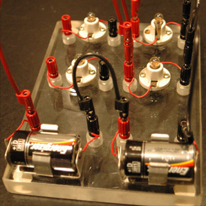
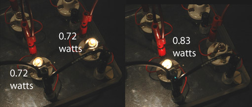
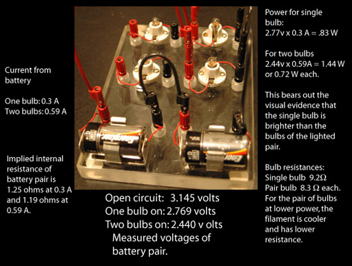

Batteries and Bulbs as DC Circuit Example
An experiment which uses batteries to power a light bulb and then two light bulbs in parallel provides an exercise in parallel circuits which requires an evaluation of the internal resistance of the battery.
|  | D-cell batteries (alkaline dry cells) mounted on a plexiglass board supply power to bulb sockets, two of which are wired in parallel here.
For an ideal voltage source, one bulb could be unscrewed without affecting the brightness of the other. But in practice it is found that the single bulb is noticeably brighter than the two bulbs when they are supplied with voltage in parallel by the batteries. |

When one bulb was unscrewed, the remaining bulb noticeably brightened, contrary to the expectation for a parallel circuit where the two voltages were presumed to be equal. You should be able to unscrew one without affecting the other. But that presumes an ideal voltage source, and any real battery has some internal resistance which must be taken into account.

Making measurements of the external voltage of the battery pair and the current flow for an open circuit, with one bulb, and with two bulbs provides the data for analyzing the observed behavior. Applying Ohm's law and the power relationship allows us to determine the internal resistance of the battery and the power used in the bulbs.
|
Index |